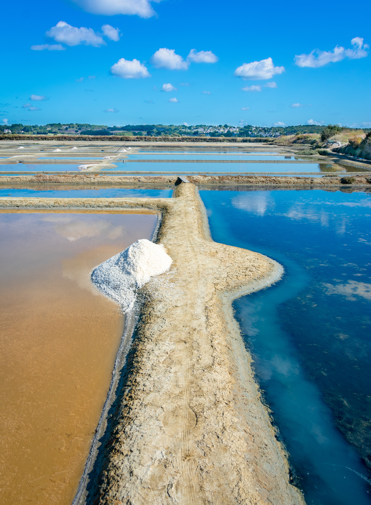

1. Histoire générale
Dans la seconde partie du xviie siècle, l'île est un haut lieu de la contrebande de tabac, au même titre que Paimbœuf. En effet, Louis XIV crée en novembre 1674 une ferme du tabac qui achète le tabac aux Antilles à des prix bas pour revendre à des prix élevés, s'exposant à la concurrence du tabac de la Virginie. Les stocks importés sont ensuite écoulés sur le continent au moyen de petites embarcations appelées les chattes. Jusqu'en 1858, le territoire de la commune s'étend sur l'ensemble de l'île, puis commence son morcellement avec la création de la commune de Barbâtre, suivie, une soixantaine d'années après, en 1919, de celles de La Guérinière et de L'Épine.
2. Les Marais Salants
Dès le 5e siècle, les moines Bénédictins ont transformé les marais humides de l’île en marais salants, par d'importants travaux de drainage. L'essor du commerce de l'or blanc, du 16e au 18e siècles, a été un atout majeur pour l'économie insulaire jusque dans les années 70. Après une période de déclin (34 sauniers en 1990), la relance est désormais assurée par de jeunes producteurs. Aujourd'hui, 3000 œillets sont exploités par une centaine de sauniers, adhérents de la coopérative ou non, récoltant le sel pur « or blanc », de façon artisanale. On récolte près de 3000 tonnes de sel marin dans une année normale, mais les récoltes sont totalement liées à la météo.
3. L'Actualité Entrepreneuriale de l'Île
Hemarina : la Startup Noirmoutrine en péril ? Le sang des vers élevés à Noirmoutier révolutionne la médecine depuis plus de dix ans. L’entreprise de biotechnologie marine Hemarina, installée à Morlaix (Finistère), développe une molécule à partir d’un ver marin. Le premier produit, prochainement commercialisé, doit booster le taux de réussite des greffes. La ferme marine de Noirmoutier élève les vers nécessaires à sa fabrication.
Détails